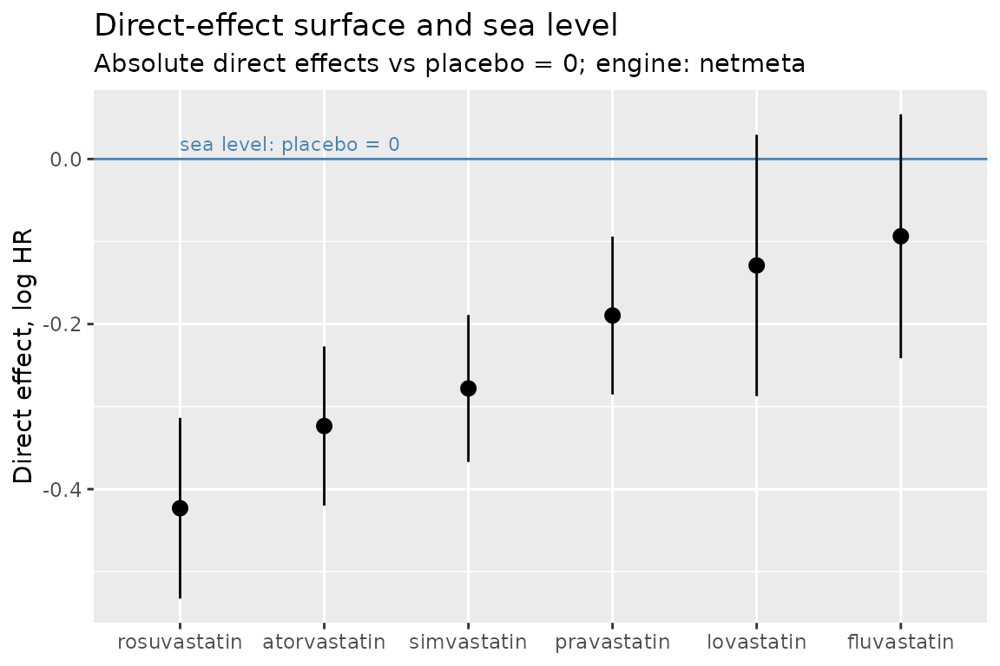

This vignette explains the method from scratch. If you know what an average and a standard error are, you have all the background you need.
The problem: we measure differences, but we want heights
Imagine you want to know how tall three friends are, but your only measuring stick is broken: it can measure the difference between two people standing back to back, never anyone’s actual height.
- Alice vs. Bob: exactly the same height.
- Alice vs. Carol: Alice is 4 cm taller.
- Bob vs. Carol: Bob is 4 cm taller.
From these three measurements you know the shape of the lineup perfectly — Alice and Bob are level, Carol is 4 cm below them — but you have no idea whether Carol is 150 cm or 190 cm. Every height could be shifted up or down by the same amount and all three measurements would still be exactly right.
Drug safety evidence has this structure. Most studies compare one drug against another drug (drug A vs. drug B), because comparing a drug against no treatment is often impossible or unethical to run. Each study measures a difference between two drugs, not any drug’s own effect. The number we actually want — the drug’s direct effect, its effect versus taking a placebo — is like the actual height.
And this leads to a trap worth naming:
A null comparison does not mean two safe drugs. “Alice vs. Bob: same height” is also true when both of them are standing on a table.
The fix: one measurement against the floor
If just one friend is ever measured against the floor, every height snaps into place. Say a proper measurement shows Carol is 160 cm. Then Alice and Bob are both 164 cm — even though no one ever measured either of them directly.
In drug terms, the “measurement against the floor” is a placebo-controlled trial. directeffect calls it an anchor, and it calls the floor sea level (placebo = 0). The package works in two deliberate steps:
- The surface: use all the drug-vs-drug comparisons to work out the shape — every drug’s position relative to the others.
- The sea level: use the placebo-controlled anchors to slide that whole shape up or down to its true absolute position.
Here is the friends example as data. Effects are on the log hazard ratio scale — 0 means “no effect”, bigger means more harmful — but the arithmetic is the same as the heights:
library(directeffect)
comparisons <- data.frame(
study_id = c("S1", "S2", "S3"),
target = c("A", "A", "B"),
comparator = c("B", "C", "C"),
estimate = c(0.0, 0.4, 0.4), # A vs B is null!
std_error = c(0.05, 0.05, 0.05)
)
anchors <- data.frame(
study_id = "RCT1",
drug = "C",
reference = "placebo",
estimate = 0.3, # C measured against the floor
std_error = 0.04
)
de <- direct_effect_network(comparisons, anchors = anchors,
effect_measure = "HR")
absolute <- anchor_surface(fit_surface(de, engine = "netmeta"))
absolute$effects[, c("drug", "estimate", "std_error")]
#> drug estimate std_error
#> 1 A 0.7 0.05715476
#> 2 B 0.7 0.05715476
#> 3 C 0.3 0.04000000The A-vs-B comparison was exactly null, yet both drugs come out at 0.7 above placebo. The null comparison told us A and B sit at the same height; the anchor on C told us how high that is.
What happens when measurements disagree
Real studies are noisy: measure the same pair twice and you get two slightly different answers, and going around a loop (A vs. B, B vs. C, C vs. A) may not sum exactly to zero. So the package cannot just chain measurements together — it has to find the heights that fit all the measurements at once, as closely as possible.
The idea is the same as taking an average, with two refinements:
- Least squares. Choose the set of heights whose predicted differences come closest to all the observed differences. When measurements conflict, the answer lands in between, the same way an average does.
-
Weighting. A study with a small standard error is a
careful measurement; one with a large standard error is a rough one.
Each measurement counts in proportion to
1 / std_error^2, so careful studies pull harder on the answer.
Anchoring works the same way: each placebo trial proposes “slide the surface by this much”, and the proposals are combined as a weighted average — the anchors’ own uncertainty is kept, so an imprecise placebo trial gives imprecise absolute effects, as it should.
Every reported estimate carries a standard error and a 95% interval built from all of this uncertainty together.
Does it actually work? A test where we know the answer
The package ships a simulated statin evidence base: twelve
head-to-head trials among six statins and three placebo-controlled
trials, generated from an invented, known truth
(example_truth) with realistic noise added. Real drug
names, fake numbers — which is exactly what makes it useful here: we can
run the full method and then grade it against the answer key.
de <- direct_effect_network(
example_comparisons,
anchors = example_anchors,
effect_measure = "HR"
)
absolute <- anchor_surface(fit_surface(de, engine = "netmeta"))Line the estimates up against the truth the data were generated from:
truth <- example_truth$theta[match(absolute$effects$drug,
example_truth$drug)]
report <- data.frame(
drug = absolute$effects$drug,
estimated = round(absolute$effects$estimate, 3),
true = truth,
error = round(absolute$effects$estimate - truth, 3),
lower = round(absolute$effects$lower, 3),
upper = round(absolute$effects$upper, 3)
)
report[order(report$estimated), ]
#> drug estimated true error lower upper
#> 5 rosuvastatin -0.423 -0.32 -0.103 -0.533 -0.314
#> 1 atorvastatin -0.324 -0.30 -0.024 -0.420 -0.227
#> 6 simvastatin -0.278 -0.26 -0.018 -0.367 -0.189
#> 4 pravastatin -0.190 -0.22 0.030 -0.285 -0.094
#> 3 lovastatin -0.129 -0.20 0.071 -0.287 0.029
#> 2 fluvastatin -0.094 -0.17 0.076 -0.241 0.054Three things to check in that table:
# 1. Every 95% interval contains the true value.
all(report$lower <= report$true & report$true <= report$upper)
#> [1] TRUE
# 2. The estimated ordering of the six statins is exactly the true
# ordering.
cor(report$estimated, report$true, method = "spearman")
#> [1] 1
# 3. The typical error is about the size the standard errors promised.
sqrt(mean(report$error^2))
#> [1] 0.06221736The estimates miss the truth by a few hundredths on the log scale — that is the noise we simulated in, not a flaw — every interval covers the true value, and the package recovers the true ranking of all six drugs. None of the six was measured against placebo more than once, and three were never measured against placebo at all; their absolute effects come entirely from the network plus the anchors.
plot_sea_level(absolute)
This grading is not a one-off: the package’s test suite re-runs it (and many stricter versions of it) on every commit.
One more safeguard: two independent calculators
Everything above was computed by a frequentist engine (the netmeta package). directeffect also implements the identical model — identical likelihood for networks with one comparison per study, like this one — a second time, in Stan, a completely independent Bayesian engine, and requires the two to agree on every drug’s estimate and standard error, continuously, in its test suite. If two independent implementations reconstruct the same surface, an error in either would have to be an error in both. The netmeta vs. Stan vignette shows that comparison on this same example data.